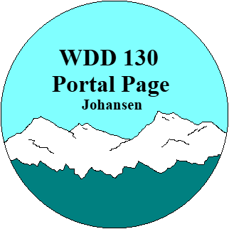
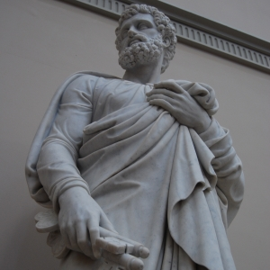
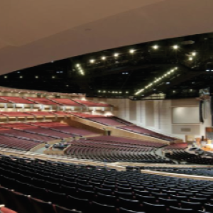
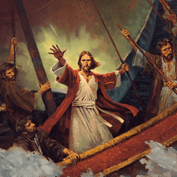

WDD 130 Portal Page
Section 5 - Winter 2026 - Beck Johansen
- In Class Experiences -
Below is a list of all the challenges we did during in class time, in alphabetical order. You can click on each tab to be brought to the specific web-page. In each challenge we put a specific skill to the test, as will be described briefly in each tab. Note that most of the following projects are not very well polished, as they were completed in a single class period.

Apostle Spotlight
A formating challenge focused on the living apostles. We practiced spacing images.

Favorite Devotional
Here we practiced creating tables to display information, and receiving inputs using forms.

Gallery
This challenge was less about HTML or CSS, and more about optimizing file sizes for run speeds.
Grid Flags
In this challenge we used CSS grid displays and background colors to recreate national flags from around the world.
Positioning
As the name betrays, this challenge was all about manipulating the position of objects. We made greate use of the grid display and z-index.
Prophet Info Card
For this challenge we were tasked with formating an informational card about President Oaks. I learned a lot about Text formating and using lists to display data.
Valentine's Day
In this CSS challenge we were all given the same HTML page that we could not change, with the charge to format the CSS in a manner that was appealing for the (then) current holiday. No two Web-Pages were alike, and it was fun to see everyone's work.